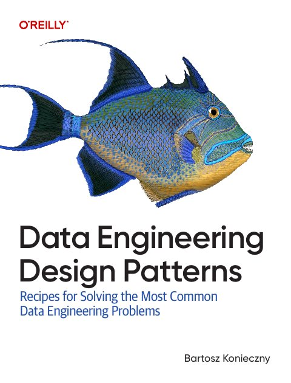
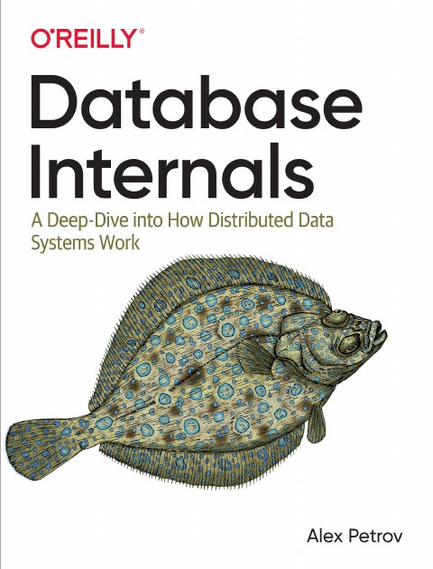
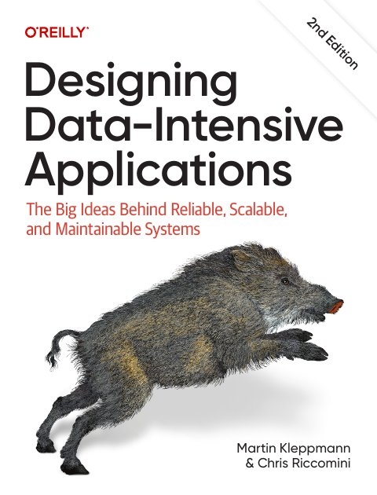
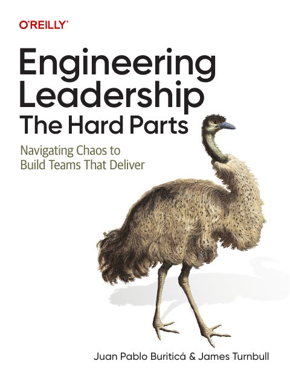
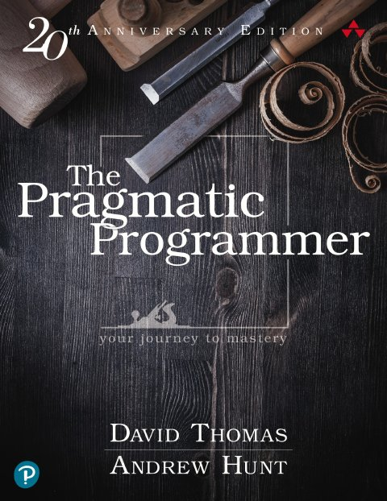

Knowledge Vault
کتابهای فنی را با انجام دادن یاد بگیرید
هر منبع به مجموعهای از درس تبدیل میشود: یادداشتهای امانتدار با ارجاع به صفحه، نمودار، شبیهسازی تعاملی و خودسنجی، بههمراه آزمایشهای کوچکی که میتوانید اجرا کنید. همه چیز بدون اینترنت و مستقیم از روی دیسک کار میکند.
کتابها
کتابهای فنی، فصل به فصل: هر فصل یک درس با یادداشتهای ارجاعدار، شبیهسازی و خودسنجی دارد.

Bartosz KoniecznyData Engineering Design Patternsویراست اول · ۲۰۲۵ · O'Reilly Media · ۳۷۵ صفحه۱۰ درس۸ شبیهسازی۴ آزمایش Yehonathan SharvitData-Oriented Programmingویراست اول · ۲۰۲۲ · Manning Publications · ۴۲۶ صفحه۱۵ درس۲۹ شبیهسازی۱۱ آزمایش
Yehonathan SharvitData-Oriented Programmingویراست اول · ۲۰۲۲ · Manning Publications · ۴۲۶ صفحه۱۵ درس۲۹ شبیهسازی۱۱ آزمایش
Alex PetrovDatabase Internalsویراست اول · ۲۰۱۹ · O'Reilly Media · ۳۷۱ صفحه۱۴ درس۱۷ شبیهسازی۷ آزمایش
Martin Kleppmann · Chris RiccominiDesigning Data-Intensive Applicationsویراست دوم · ۲۰۲۶ · O'Reilly Media · ۶۷۲ صفحه۱۴ درس۴۹ شبیهسازی۱۰ آزمایش
Juan Pablo Buriticá · James TurnbullEngineering Leadership: The Hard Partsویراست اول · ۲۰۲۶ · O'Reilly Media · ۲۷۳ صفحه۱۱ درس۹ شبیهسازی۳ آزمایش Camille FournierThe Manager's Pathویراست اول · ۲۰۱۷ · O'Reilly Media · ۲۴۳ صفحه۱۰ درس۷ شبیهسازی۳ آزمایش
Camille FournierThe Manager's Pathویراست اول · ۲۰۱۷ · O'Reilly Media · ۲۴۳ صفحه۱۰ درس۷ شبیهسازی۳ آزمایش
David Thomas · Andrew HuntThe Pragmatic Programmerویراست ویژهی بیستمین سالگرد · ۲۰۲۰ · Addison-Wesley (Pearson Education) · ۴۹۷ صفحه۱۰ درس۱۷ شبیهسازی۹ آزمایش Dominik TornowThink Distributed Systemsویراست اول · ۲۰۲۵ · Manning Publications · ۱۹۴ صفحه۱۲ درس۱۷ شبیهسازی۶ آزمایش
Dominik TornowThink Distributed Systemsویراست اول · ۲۰۲۵ · Manning Publications · ۱۹۴ صفحه۱۲ درس۱۷ شبیهسازی۶ آزمایش